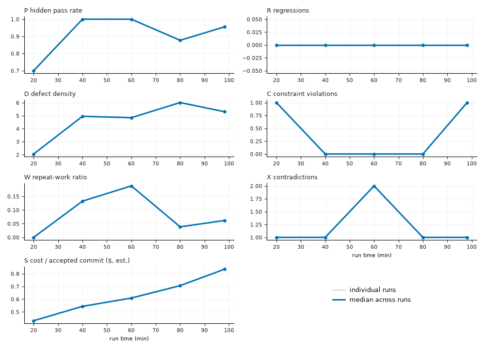
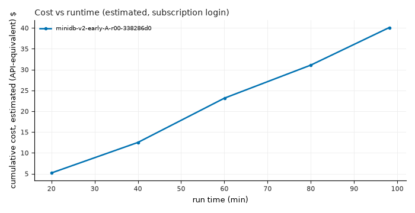
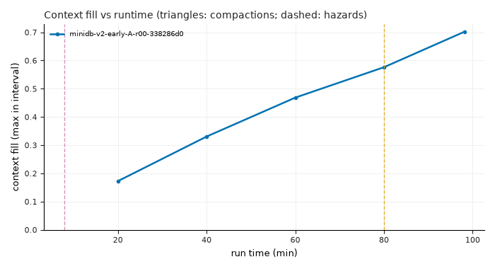
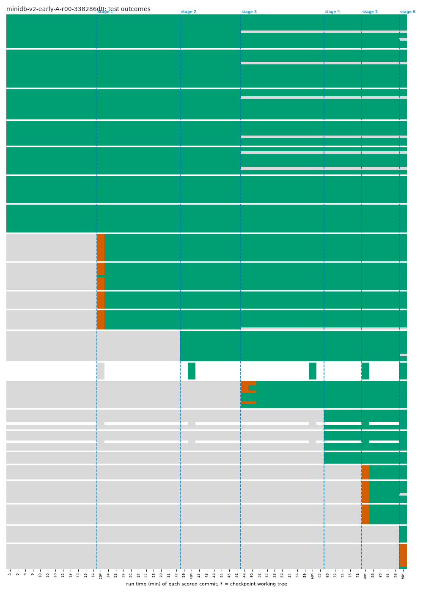
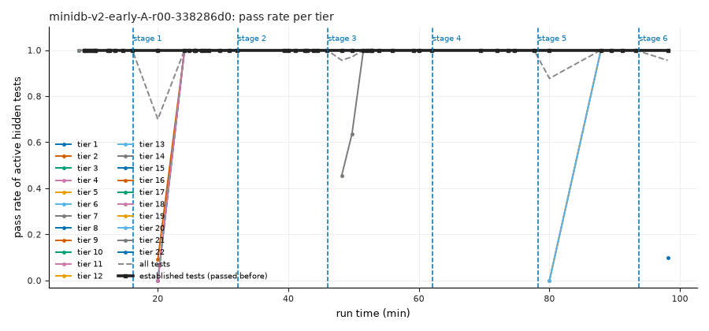
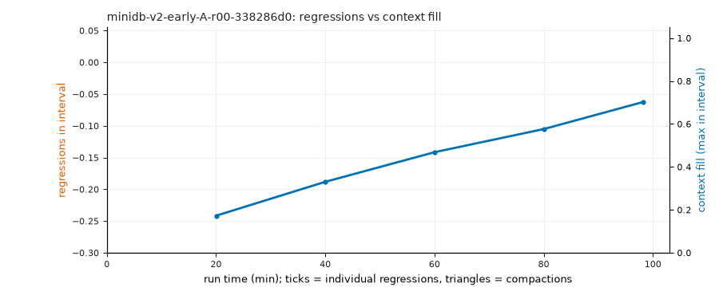
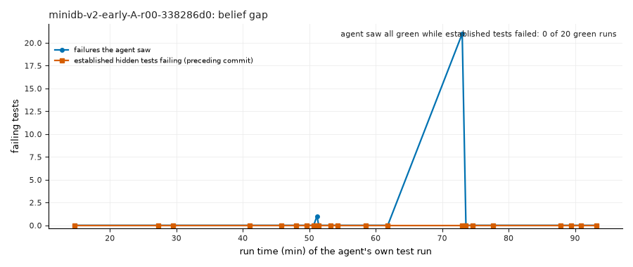

Runs used isolation mode local: they were not OS-isolated; out-of-scope access was detected through the command channel only.
| Run | Config | State | Duration | TTFH | Outcome | Checkpoints | Cost, estimated (API-equivalent) | Tokens |
|---|---|---|---|---|---|---|---|---|
| minidb-v2-early-A-r00-338286d0 | A | BUDGET_EXHAUSTED | 98.1 min | 7.9 min | hazard | 5 | $40.09 | 122,248,921 |
L3 / config A (n=1, events=1): median TTFH 7.9 min (bootstrap 95% CI 7.9 min to 7.9 min).
Bound never reaches target: the lower one-sided 90% bound of S(t) is below 0.8 at every observed time.




Per-test history from the hidden suite scored on every agent commit and at every checkpoint. A regression is a test that passed and then failed or errored at a later scored point (skipped = not active at that stage, ignored). Established tests are those that had passed before; their pass rate cannot fall because a feature is not implemented yet, so a fall is genuine degradation. The belief gap compares what the agent's own pytest runs reported with the hidden suite at the nearest preceding commit (the agent may have run only a subset, so treat it as a signal).
| Run | Points | Tests | Ever passed | Regressions | Tests regressed | Relapsing (≥2) | Mean time to 1st regression | Established rate, min / final | All-tests rate, final | Agent green while failing |
|---|---|---|---|---|---|---|---|---|---|---|
| minidb-v2-early-A-r00-338286d0 | 53 | 211 | 202 | 0 | 0 | 0 | - | 100% / 100% | 96% | 0 of 20 green (0%) |
| Run | Test | Tier | Regressions | Recoveries | First passed | Time to 1st regression | Last outcome |
|---|---|---|---|---|---|---|---|
| No test regressed. | |||||||
| Context fill | Checkpoint intervals | Regressions | Regressions / hour |
|---|---|---|---|
| 0.00-0.25 | 1 | 0 | 0.0 |
| 0.25-0.50 | 2 | 0 | 0.0 |
| 0.50-0.75 | 2 | 0 | 0.0 |
| >= 0.75 | 0 | 0 | - |
| Interval | Count | Regressions | Regressions / hour |
|---|---|---|---|
| compaction | 0 | 0 | - |
| after compaction | 0 | 0 | - |
| other | 5 | 0 | 0.0 |
| Run-time window (1 h) | Runs | Regressions | Hours | Regressions / hour |
|---|---|---|---|---|
| 1 | 1 | 0 | 1.00 | 0.0 |
| 2 | 1 | 0 | 0.64 | 0.0 |




Staged task. At the last scored point: 192 passing, 0 regressed, 9 not yet implemented, 10 inactive.
| Stage | Delivered | Carried / retired / new tests | Carried pass: before | right after | end of stage | Regressions of carried tests | Retired tests, pass before | New tests, pass at end |
|---|---|---|---|---|---|---|---|---|
| 1 | 16.3 min | 83 / 0 / 37 | 100% | 100% | 100% | 0 | - | 100% |
| 2 | 32.2 min | 120 / 0 / 12 | 100% | 100% | 100% | 0 | - | 100% |
| 3 | 46.1 min | 125 / 7 / 11 | 100% | 100% | 100% | 0 | 100% | 100% |
| 4 | 62.1 min | 136 / 0 / 19 | 100% | 100% | 100% | 0 | - | 100% |
| 5 | 78.3 min | 155 / 0 / 32 | 100% | 100% | 100% | 0 | - | 100% |
| 6 | 93.7 min | 175 / 3 / 26 | 100% | 100% | 100% | 0 | 100% | 65% |
| Run | Time | Kind | Detail |
|---|---|---|---|
| minidb-v2-early-A-r00-338286d0 | 7.9 min | hazard: context | C>0 (checkpoint 1): 1 constraint violation(s) at checkpoint 1 |
| minidb-v2-early-A-r00-338286d0 | 80.0 min | hazard: cost | S_int>multiplier*baseline (checkpoint 4): S_int=1.3245 > 2.0 x baseline 0.5436 |
| minidb-v2-early-A-r00-338286d0 | 98.1 min | budget stop | per-run budget reached |
Costs are estimated (API-equivalent) figures derived from token telemetry; the runs use a subscription login, so there is no bill.